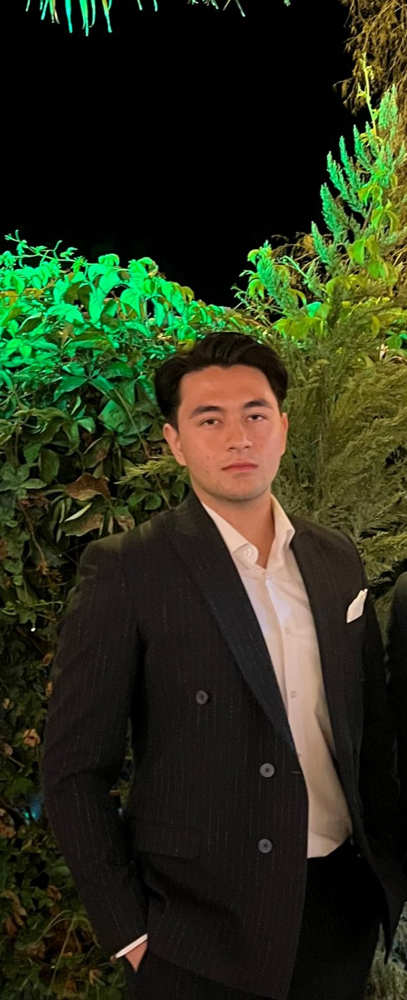
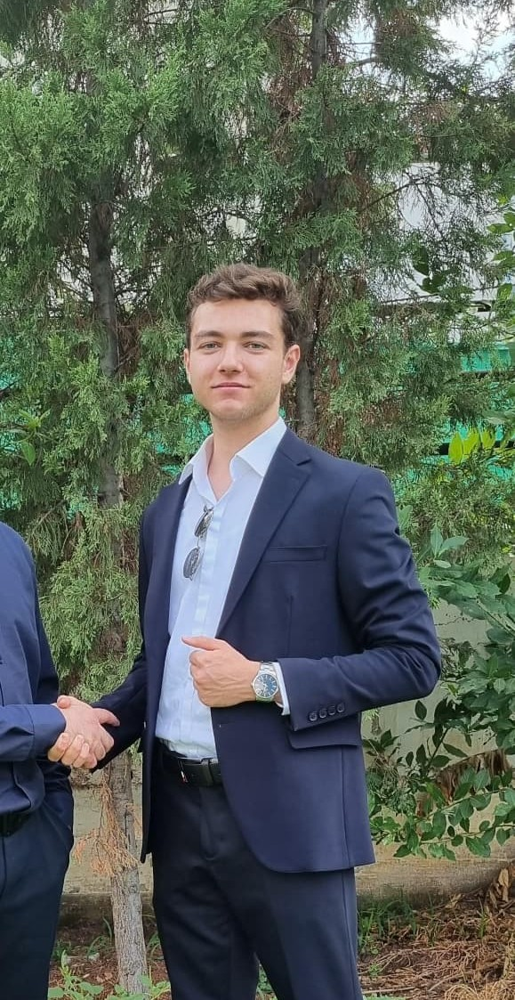

Proje Ekibimiz
Mühendislik ve veri biliminin gücüyle enerji sektörünü dönüştürüyoruz.

Yusuf Emre DOĞAN
Elektrik Elektronik Müh.Pamukkale Üniversitesi

Abdulhamit KESKİN
Yönetim Bilişim SistemleriPamukkale Üniversitesi

Talha Faruk PARLAK
Elektrik Elektronik Müh.Pamukkale Üniversitesi